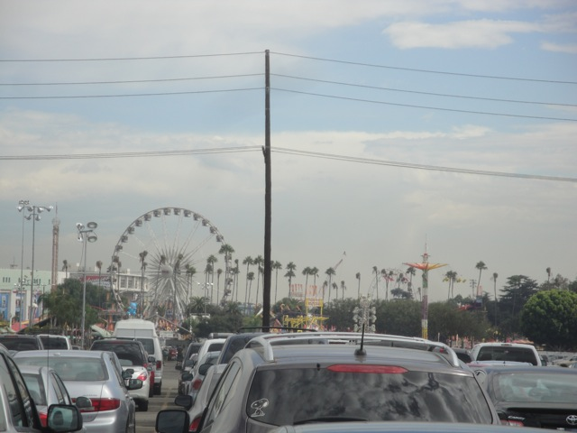
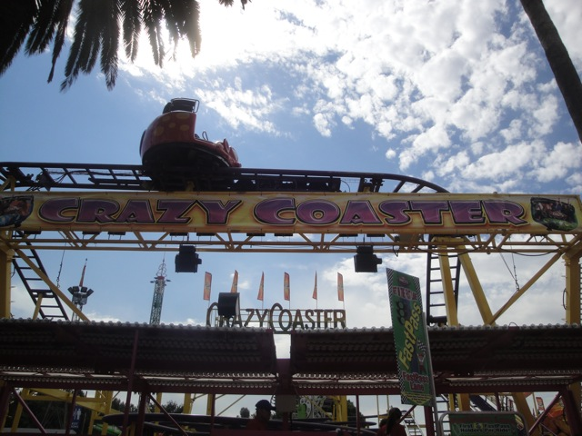
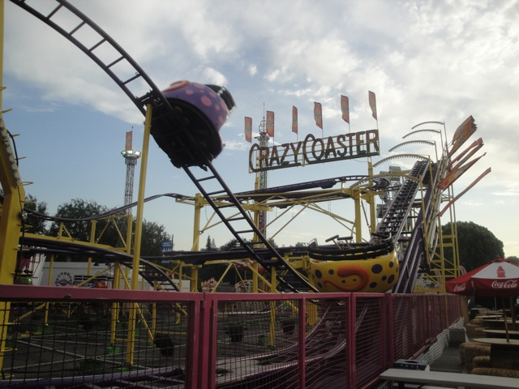
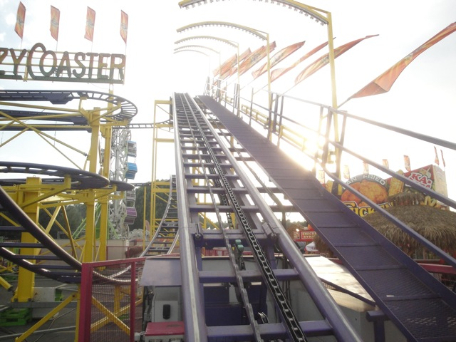
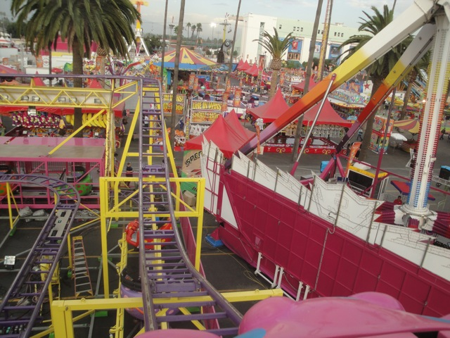
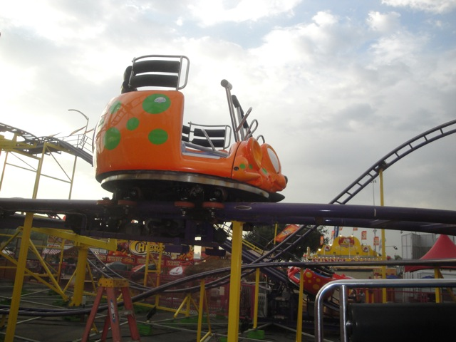

L.A County Fair 2011

All right. So as you know, the Ventura County Fair now sucks!!! While Pat Benetar and Bungee Jumping was fun, everything else was crap!!! So to make up for that, we took a visit to the L.A County Fair to get our official fair visit in for the year.
Already nicer than the Ventura County Fair. At least this fair has a real entrance.
F*cking awesome!!! And yes, I will be seeing them later tonight!!! =)
Can I count that as a credit?

That may not count as a credit, but the L.A County Fair does have a couple credits for me to get.

Oh boy!!! Yet another spinning mouse!!!!

Crazy Mouse > Pole Position.

This spinning mouse spun ok. It certainly was far from the best. But at least it was better than the mouse at Mt. Olympus. But that's really not saying much.

Oh, and the operators didn't check the restraints for anyone who wasn't riding. They just left them open.
 Continuing the theme of getting L.A Fair credits, I then checked out Typhoon.
Continuing the theme of getting L.A Fair credits, I then checked out Typhoon.
 A little bit of history about this ride. It originally opened up at Santa's Village near Chicago Illinois in 1998. But because apparently that place was a total sh*thole, the park closed in 2006. Typhoon was bought by a Traveling Fair Company and was brought to the L.A County Fair for 2011.
A little bit of history about this ride. It originally opened up at Santa's Village near Chicago Illinois in 1998. But because apparently that place was a total sh*thole, the park closed in 2006. Typhoon was bought by a Traveling Fair Company and was brought to the L.A County Fair for 2011.
 This ride was known as one of the worst rides ever by many roller coaster enthusiasts, who claimed that it was rough as hell and a death machine, so that was pretty interesting to hear.
This ride was known as one of the worst rides ever by many roller coaster enthusiasts, who claimed that it was rough as hell and a death machine, so that was pretty interesting to hear.
 The ride itself was interesting. It was definetly rough and had headbanging, but luckily, the padding actually works so it doesn't hurt as long as you brace yourself in the right spots. As for the ride itself, it was mostly fairly slow, awkward, and weird. Though the incline loop was pretty damn cool as it did give you good hangtime.
The ride itself was interesting. It was definetly rough and had headbanging, but luckily, the padding actually works so it doesn't hurt as long as you brace yourself in the right spots. As for the ride itself, it was mostly fairly slow, awkward, and weird. Though the incline loop was pretty damn cool as it did give you good hangtime.
It's certainly not a good ride. Not anywhere close to it. But I've ridden worse.
 Hey Mega Drop. Hows it going? We miss you at the Ventura County Fair. Please come back. We promise to have more Pat Benetar and less greediness in 2012.
Hey Mega Drop. Hows it going? We miss you at the Ventura County Fair. Please come back. We promise to have more Pat Benetar and less greediness in 2012.
Dude, these rides are awesome!!! More parks need to have Evolutions!!!
All right. There are two L.A County Fair flat rides that I simply must talk about. Both of which now make the Top 10 Flat Rides List. The first one is Speed. This ride is awesome. It's fast, insane, and actually had some great flips.
And the other one is NOT the Zipper. I didn't do this Zipper because A: It was physically impossible for me to ride it since you need two people, I was alone, nobody was riding it, and everybody who did always had an even number of people riding so EVERYONE had a partner. And b: It looked like it was running a lame program.
The other L.A County Fair flat ride that I must talk about is Tango. This flat ride is freaking INSANE!!! I mean INSANE!!!!!! It flipped you in so many different ways that is just crazy!!! The reason I don't have it in motion is because it never ran because first of all, nobody was at the fair today. It was DESERTED. And not in the good way either. It was deserted in the sense of you wait 45 minutes just to find a second person to ride with you because they can't run the ride with only one person on it. And finding other people to ride Tango was suprisingly impossible. It was literally like playing RCT where a really cool ride doesn't get any riders because EVERYBODY claims "Tango is too intense for me." They are all literally like f*cking RCT Peeps. The only thing missing is their hair sticking out before they say it and I'd swear I've been teleported into an RCT scenario. In fact, the two times I actually managed to find people who would ride it, THEY ALL came off hating it. Seriously. I was the only person at the f*cking L.A County Fair who liked Tango.
Oh, and they had a Starflyer here as well. While it was really cool that they had a starflyer, it wasn't nearly as good as the Coney Island one. Partly because this one is actually even smaller, but a view of the L.A County Fair and Pomona CA isn't nearly as cool as a view of Coney Island, New York City, and the Atlantic Ocean with a cool ocean breeze blowing in your face.
 Oh sweet. They got Techno Power...I mean ReMix at the L.A County Fair. Meh, same basic ride. Which is awesome!!! =)
Oh sweet. They got Techno Power...I mean ReMix at the L.A County Fair. Meh, same basic ride. Which is awesome!!! =)
 Oh yeah. There's still one last credit left for me at the L.A County Fair.
Oh yeah. There's still one last credit left for me at the L.A County Fair.
 Cha Ching!!! Credit #284.
Cha Ching!!! Credit #284.
 This fun house was freaking awesome. It's three storys tall and had all sorts of great effects.
This fun house was freaking awesome. It's three storys tall and had all sorts of great effects.
Herro. My name is Scooby Do...I mean Random Great Dane. We don't have those rights. Win me and I will ruv...I mean love you!!!
"I eat the Ventura County Fair's ferris wheel for breakfast."
"OMFG!!!! DO THEY HAVE STUFF WITH THEM ON THE SKYRIDE!!!!! CALL THE POLICE!!!! CALL THE NATIONAL GUARD!!!!! FINAL DESTINATION 3 IS ABOUT TO HAPPEN!!!!! Oh wait, we're not at Indiana Beach. Never mind."
 "OH MY GOD!!! AN ENTIRE ARMY OF SCHOOL KIDS!!!!! RUN!!!!!!!"
"OH MY GOD!!! AN ENTIRE ARMY OF SCHOOL KIDS!!!!! RUN!!!!!!!"
It's too late. You read the sign. You're all going to hell now.
Hey Antonio, do we need to turn the barrel off for you again?
This is the third time this frisbees been under a different name. First it was Xtreme at the Ventura County Fair. Then it was Fireball at the Santa Barbara Fair, and now it's G Force at the L.A County Fair. Just pick a freaking name and stick with it!!!!
"Why no Officer. I've looked like this my entire life."
Wee!!!! Slides are always fun!!!
That's actually a really creative way to spice an ordinary old Music Express.
Yep. They had a bouncy bouncy ride here and it was freaking awesome!!!
Oh yeah, they also had this Log Flume. It looked like crap. But hey. At least it had a log flume.
Yeah. These types of slides are always awesome.
Yeah. What could possibly make for a better dinner than a slice of deep fried watermelon.
 It's not nearly as gross as you would think.
It's not nearly as gross as you would think.
And now for the highlight of the day, the Doobie Brothers!!! =)
 Yeah. They were f*cking awesome. They not only played some of their classic hits, but they also gave us a sneak peek at their latest album, World gone Crazy, which has some really good songs on it.
Yeah. They were f*cking awesome. They not only played some of their classic hits, but they also gave us a sneak peek at their latest album, World gone Crazy, which has some really good songs on it.
Home